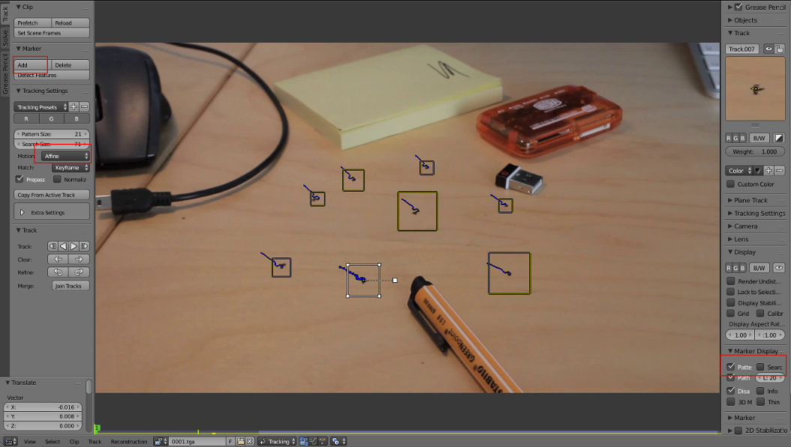
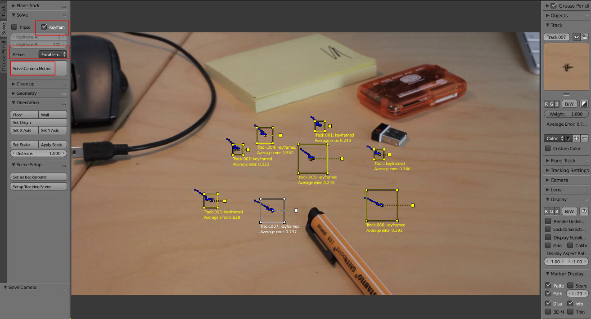
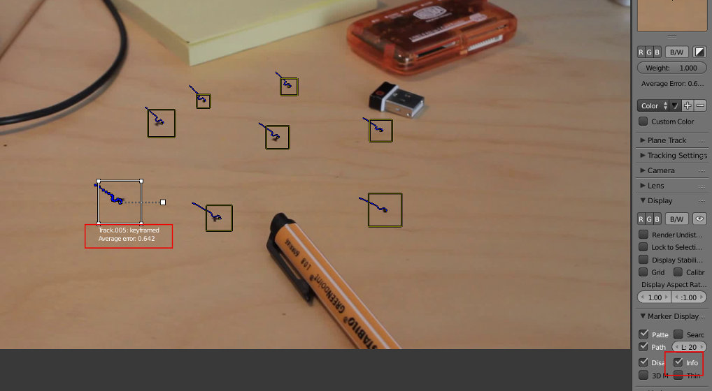
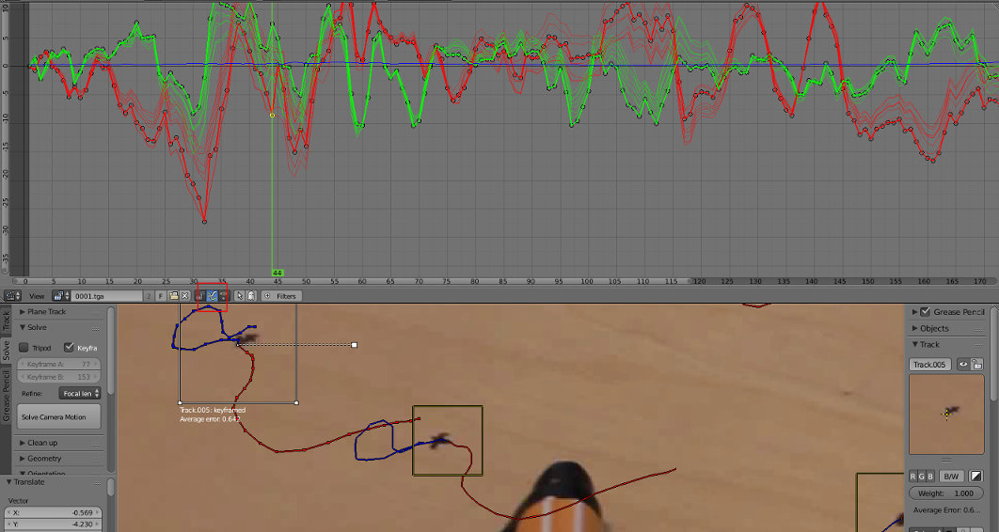
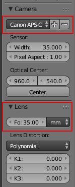
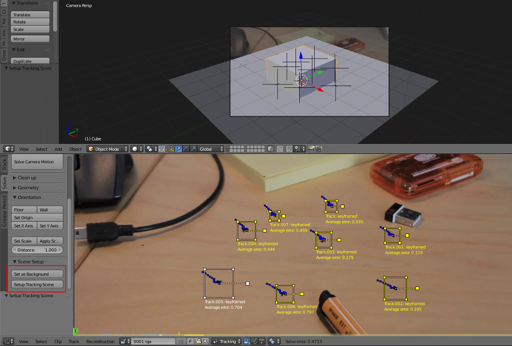
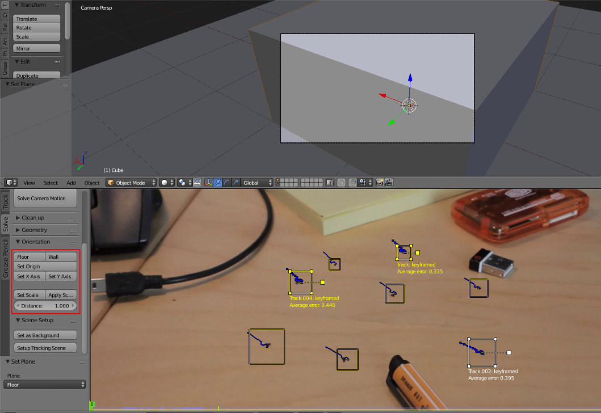
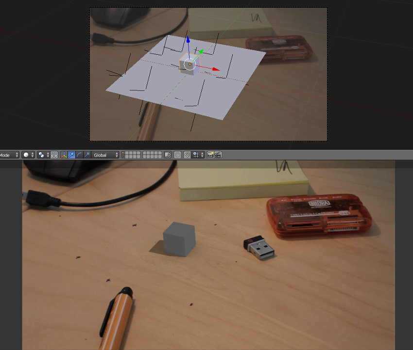

Se ainda não leu, por favor comece pelo texto Recomendações e Introdução. Neste texto vamos utilizar o ficheiro camera_tracking2.mp4 (dados e ficheiro disponibilizados nesse texto) e é fortemente recomendado que aumente a memória RAM disponível para tarefas de tracking e edição de vídeo (explicação no mesmo texto).
O primeiro passo foi a conversão do vídeo para uma sequência de imagens. No nosso caso, foram utilizadas 175 frames (7 segundos), desde a frame 1 até à 175, convertidas para Targa para não perder qualidade com compressão.
O segundo passo foi a importação da sequência de imagens para o Movie Clip Editor.
Acertámos as configurações de renderização de acordo com os ficheiros de imagem e vídeo original (25 FPS, 1920x1080) e definimos a timeline para 175 frames (Start no 1 e End no 175) pois vamos trabalhar com 175 frames.
Com o rato na janela principal, clicámos em P para fazer prefetch (transferir imagens para a memória cache). Pode obter o mesmo efeito através do Play Animation (Alt+A).
Com o rato na janela principal, clicámos em F para aumentar automaticamente a imagem até que esta ocupe toda a área disponível no Movie Clip Editor.
Com a sequência na memória, faça scrubbing (deslocar o Time Cursor - a linha verde - na Timeline) para ver pontos que estão sempre visíveis no enquadramento.
Certifique-se de que está na frame 1 ou na primeira frame da sequência. Pressione o botão Add (painel Marker) e clique na imagem gpara adicionar um marcador (atalho é CTRL+BER). Coloque o marcador no ponto que pretende seguir (track). Escolha locais que se destacam claramente, com bom contraste.
No Tracking Settings, se desejar, pode altera o Motion Model para Affine. Apesar de aumentar a morosidade, este modo permite fazer track à mudança de perspetiva, deforma o marker, obtendo maior precisão. No exemplo abaixo não foi utilizado este Motion Model.
Para mover um marker, selecione-o e clique em G. Para mover com maior precisão, pressione o SHIFT enquanto desloca o marker.
Na coluna das propriedades, lado direito, tem uma janela que permite ativar a visualização da área do pattern (quadrado menor que envolve a âncora, o ponto que marca o local para fazer tracking) e de Search. Pode aumentar as áreas com S ou inserindo os valores na barra de ferramentas (lado esquerdo), secção Tracking Settings.
Ative o tracking (CTRL+T). Corrija a posição (ou dimensão, se necessário) do marker sempre que este se perder. Caso seja necessário, ugtilize o Esc para interromper o tracking.
Repita o processo até obter 8 marcadores (mínimo necessário!). Neste caso, foram utilizados os pontos na mesa. De um modo geral, dever+a tentar espalhar os markers de modo a que estes cubram toda a frame. Mais markers com bom tracking = maior qualidade e precisão.
Depois de ter 8 trackers feitos, é altura de inserir os dados da câmara e definir as keyframes para o cálculo do movimento. As keyframes definem dois momentos na sequência que incluem mudança de perspectiva. Estas configurações podem ser inseridas manualmente mas também pode deixar o Blender tentar descobrir as melhores configurações. Neste exercício iremos utilizar o método automático.
Na aba Solve, ative a caixa Keyframe e, no Refine, escolha Focus Length, K1. Deste modo, durante o Solve ( cálculo do movimento da câmara), o Blender irá tentar escolher as melhores keyframes e descobrir a distância focal com que foi capturada a imagem (K1 procura resolver a distorção provocada pela lente).
Coloque-se na frame 1, selecione todos os trackers e clique em Solve Camera Motion. Aguarde pelo cálculo e verifique o valor do Solve Error. O algoritmo irá calcular o movimento da câmara e irá apresentar uma margem de erro que permite avaliar a exatidão do tracking. No nosso caso, deu 0.4713. Acima de 1.0 é um tracking fraco, deverá ser sempre menos de 1. No entanto, quanto menor o erro, melhor é o resultado final. Recomenda-se tentar sempre menos de 0.5, o que é bom!
Se desejar, pode ativar a opção Info (Marker Display na barra de propriedades) para identificar os trackers que têm maior erro.
A janela Graph permite ainda ver o percurso dos markers. As linhas vermelhas descrevem movimento em X, as linhas verdes descrevem movimento em Y. Verifique se alguma linha "salta" em demasia e corrija. Caso corrija “saltos” existentes, volte a fazer o Solve Camera Motion.
Pode ser útil introduzir valores da lente e câmara (painel propriedades). Caso o seu modelo não conste na lista do Blender, introduza os valores do sensor (especificações técnicas do dispositivo).
No entanto, antes de fazer novo Solve Camera Motion, faça Clear Solution (menu Track). Neste exemplo (com este vídeo), se quiser experimentar introduzir os valores da câmara, assegure-se que tem 35mm na lente, câmara Canon APS-C e 0 no K1 da Lens Distortion. Na aba Solve, ative a caixa Keyframe e, no Refine, escolha Focus Length, K1.
Divida a área de trabalho de modo a ter uma janela com o 3D View. Coloque-se em modo de visão de câmara na janela de 3D View.
No Movie Clip Editor, clique em Set as Background para o clip ser visível na câmara do 3D View. Clique em Setup Tracking Scene para criar uma cena (inclui configuração de nós) pronta a renderizar.
No Movie Clip Editor, selecione 3 trackers que estejam no chão e clique em Floor. O Blender irá alinhar a grelha do 3D View com estes três trackers.
Selecione o tracker que estiver mais central e clique em Origin. O Blender irá definir este tracker como o ponto de origem, onde os eixos X, Y e Z se cruzam na grelha do 3D View.
Selecione outro tracker para definir o eixo X (pode fazer o mesmo para o Y).
Finalmente, selecione dois trackers para definir a escala. A distância entre estes dois trackers irá ser equivalente a 1 Blender Unit (1 quadrado da grelha).
Nesta altura, através da câmara na janela 3D View já é possível colocar elementos e ver a sequência de imagens através do ALT+A.
Agora é uma questão de ajustar a cena que pretende criar, trabalhar a iluminação e materiais, trabalhar no editor de nós e renderizar.